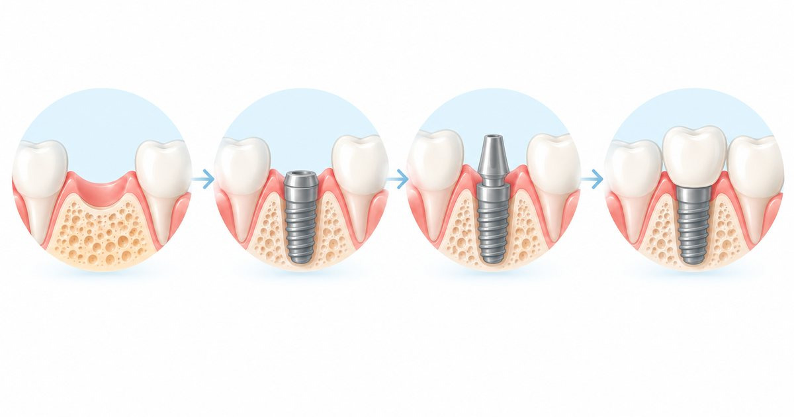

Information générale. Cet article s’appuie sur des recommandations publiées. Il ne constitue ni un diagnostic, ni une prescription, ni un conseil personnalisé : seul un examen par un chirurgien-dentiste ou un médecin permet de décider de la prise en charge qui vous convient. Ne commencez et n’arrêtez aucun traitement sur la seule foi de cet article.
L'essentiel
- La HAS a évalué deux situations : l’édentement complet (prothèse amovible complète retenue par des implants) et l’édentement unitaire (prothèse fixée sur un implant).
- Elle conclut que ces prothèses sont des modalités valides de traitement de l’édentement.
- Le parcours comprend une phase avant la pose, une phase de traitement et une phase de maintenance.
- La HAS a rendu en 2024 un avis favorable au remboursement de ces prises en charge. Cet avis n’est pas une décision de remboursement : renseignez-vous sur ameli.fr.
Ce que la HAS a évalué
L’évaluation « Prise en charge implanto-prothétique de l’édentement » a été validée en octobre 2024 (décision du Collège du 17 octobre 2024) et mise en ligne le 6 novembre 2024. Elle porte sur :
- l’édentement complet, traité par une prothèse amovible complète retenue par des implants ;
- l’édentement unitaire (une ou deux dents manquantes), traité par une prothèse fixée sur un implant.
La HAS conclut que les prothèses supra-implantaires concernées sont des modalités valides de traitement de l’édentement.
Plus aucune dent sur l’arcade. Prothèse amovible complète retenue par des implants.
Une ou deux dents manquantes. Prothèse fixée sur un implant.
Un parcours en trois phases
- Avant le traitement : évaluation de la faisabilité (facteurs de risque généraux et locaux, étude préimplantaire), consentement éclairé du patient, dossier médical et traçabilité. Cette phase comprend aussi des prérequis indispensables : une bouche assainie, sans pathologie active, avec une bonne hygiène bucco-dentaire.
- Le traitement : chirurgie de pose des implants, avec d’éventuels aménagements autour de l’implant, puis pose des prothèses, avec une possible temporisation.
- Après le traitement (maintenance) : séances de contrôle professionnel, actes préventifs à une fréquence adaptée aux facteurs de risque du patient, et hygiène bucco-dentaire quotidienne.
- Avant le traitement
Faisabilité (facteurs de risque généraux et locaux, étude préimplantaire), consentement éclairé, dossier médical, bouche assainie.
- Le traitement
Chirurgie de pose des implants, éventuels aménagements autour de l’implant, puis pose des prothèses.
- Après le traitement
Contrôles professionnels, actes préventifs à une fréquence adaptée aux facteurs de risque, hygiène quotidienne.
Et le remboursement ?
En novembre 2024, à la demande de l’Assurance maladie, la HAS a rendu un avis favorable au remboursement de ces prises en charge dans l’édentement complet et dans l’édentement unitaire, pour la population générale. Selon le communiqué de la HAS, la pose d’implants n’est pas remboursée pour la majorité des patients. Un avis de la HAS n’est pas une décision de remboursement : ce sont l’Assurance maladie et les pouvoirs publics qui décident des actes pris en charge et de leurs tarifs.
Pour savoir ce qui est remboursé aujourd’hui, consultez le site ameli.fr et interrogez votre organisme complémentaire. Certaines situations particulières, comme les agénésies dentaires multiples liées à une maladie rare, sont prises en charge dans des conditions décrites sur ameli.fr.
Avant tout traitement, vous avez le droit de recevoir un devis détaillé indiquant le prix de chaque acte et ce qui est pris en charge.
Évalue l’intérêt des prises en charge et s’est prononcée en 2024 de façon favorable au remboursement.
Relève de l’Assurance maladie et des pouvoirs publics, qui fixent les actes pris en charge et leurs tarifs.
Pourquoi une bouche assainie avant la pose ?
Parmi les prérequis cités par la HAS : une bouche assainie, sans pathologie active, avec une bonne hygiène bucco-dentaire. C’est pourquoi une maladie des gencives doit être traitée avant d’envisager la pose. Voir l’article « Peut-on poser un implant après une parodontite ? ».
Avant de vous décider
- Vous avez le droit de recevoir un devis détaillé indiquant le prix de chaque acte et ce qui est pris en charge.
- Le consentement éclairé fait partie de la phase qui précède le traitement : posez toutes vos questions avant de décider.
- Renseignez-vous sur ameli.fr et auprès de votre organisme complémentaire pour savoir ce qui est remboursé aujourd’hui.
Les mots à connaître
- Édentement
- Absence d’une ou de plusieurs dents.
- Prothèse supra-implantaire
- Prothèse (couronne, bridge ou prothèse amovible) qui repose sur un ou plusieurs implants.
- Étude préimplantaire
- Bilan réalisé avant la pose pour évaluer la faisabilité du traitement.
- Consentement éclairé
- Accord donné par le patient après avoir reçu une information claire sur le traitement, ses alternatives et ses risques.
- Maintenance
- Suivi à long terme après la pose : contrôles professionnels et hygiène quotidienne.
Questions à poser à votre praticien
Ces questions peuvent vous aider à préparer un rendez-vous. Les réponses dépendent de votre situation.
- Mon cas relève-t-il d’un édentement unitaire ou complet, et quelles options existent ?
- Quels examens et quelles étapes sont prévus avant la pose ?
- Ma bouche est-elle prête, ou y a-t-il des soins à faire d’abord ?
- Pouvez-vous me remettre un devis détaillé, acte par acte ?
- Quel suivi est prévu après la pose, et à quelle fréquence ?
Questions fréquentes
Qu’a évalué la HAS ?
Les prises en charge implanto-prothétiques de l’édentement dans deux situations : l’édentement complet (prothèse amovible complète retenue par des implants) et l’édentement unitaire, c’est-à-dire une ou deux dents manquantes (prothèse fixée sur un implant).
Quelles sont les trois phases du parcours ?
Avant le traitement (faisabilité, consentement éclairé, bouche assainie), le traitement (pose des implants puis des prothèses), et la maintenance (contrôles professionnels, actes préventifs, hygiène quotidienne).
Les implants sont-ils remboursés ?
La HAS a rendu en 2024 un avis favorable au remboursement, mais cet avis n’est pas une décision de remboursement. Selon son communiqué, la pose d’implants n’est pas remboursée pour la majorité des patients. Consultez ameli.fr et votre organisme complémentaire.
Ai-je droit à un devis ?
Oui. Avant tout traitement, vous avez le droit de recevoir un devis détaillé indiquant le prix de chaque acte et ce qui est pris en charge.
Pourquoi la HAS parle-t-elle de bouche assainie ?
C’est un prérequis : une bouche sans pathologie active et avec une bonne hygiène bucco-dentaire doit précéder la pose.
Un suivi est-il nécessaire après la pose ?
Oui. La HAS inclut dans le parcours une phase de maintenance, avec des séances de contrôle professionnel, des actes préventifs adaptés aux facteurs de risque du patient et une hygiène quotidienne.
En résumé
La HAS décrit un parcours en trois phases : un bilan avant la pose, le traitement, puis une maintenance durable. Elle juge valides les prothèses sur implants dans l’édentement complet et unitaire, et a rendu en 2024 un avis favorable à leur remboursement, qui n’est pas en soi une décision de prise en charge.
Références
- Haute Autorité de santé (HAS). Prise en charge implanto-prothétique de l’édentement. Évaluation des technologies de santé, avis du Collège du 17 octobre 2024, mise en ligne le 6 novembre 2024. https://www.has-sante.fr/jcms/p_3356489/fr/prise-en-charge-implanto-prothetique
- Haute Autorité de santé (HAS). Implants et prothèses dentaires : avis favorable de la HAS pour leur remboursement dans les édentements complet ou unitaire. Communiqué du 6 novembre 2024. https://has-sante.fr/jcms/p_3555021/fr/implants-et-protheses-dentaires-avis-favorable-de-la-has-pour-leur-remboursement-dans-les-edentements-complet-ou-unitaire
- Assurance Maladie (ameli). Agénésies dentaires multiples (enfant, adulte) : soins et prothèses dentaires pris en charge. https://www.ameli.fr/assure/remboursements/rembourse/soins-protheses-dentaires-optique-audition/consultations-soins-protheses-dentaires/agenesies-dentaires-multiples-enfant-adulte
Pour une question sur votre situation personnelle, un examen est nécessaire : coordonnées et prise de rendez-vous sur la page Contact. N’envoyez pas d’informations de santé par le formulaire en ligne.